import geopandas
import xarray, rioxarray
import contextily
import seaborn as sns
from pysal.viz import mapclassify as mc
from legendgram import legendgram
import matplotlib.pyplot as plt
import palettable.matplotlib as palmpl
from splot.mapping import vba_choropleth2 Geovisualisation
This block is all about visualising statistical data on top of a geography. Although this task looks simple, there are a few technical and conceptual building blocks that it helps to understand before we try to make our own maps. Aim to complete the following readings by the time we get our hands on the keyboard:
- Block D of the GDS course (Arribas-Bel 2019), which provides an introduction to choropleths (statistical maps).
- This Chapter of the GDS Book (Rey, Arribas-Bel, and Wolf forthcoming) , discussing choropleths in more detail.
Additionally, parts of this block are based and sourced from Chapters 2, 3 and 4 from the on-line course “A course in Geographic Data Science”, by Dr Elisabetta Pietrostefani and Dr Carmen Cabrera-Arnau (Pietrostefani and Cabrera-Arnau 2024). This course also provides code in R.
2.1 Packages and modules
2.2 Data
If you want to read more about the data sources behind this dataset, head to the Datasets section.
Assuming you have the file locally on the path ./data/:
db = geopandas.read_file("./data/cambodia_regional.gpkg")Quick visualisation:
fig, ax = plt.subplots()
db.to_crs(
epsg=3857
).plot(
edgecolor="red",
facecolor="none",
linewidth=2,
alpha=0.25,
figsize=(9, 9),
ax=ax
)
contextily.add_basemap(
ax,
source=contextily.providers.Esri.NatGeoWorldMap
)
ax.set_axis_off()
plt.show()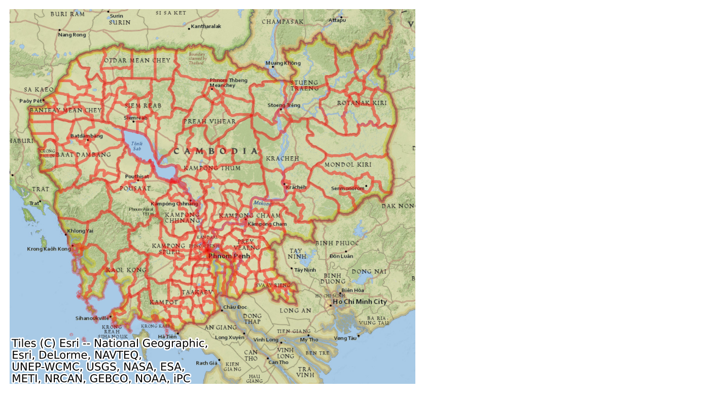
db.info()<class 'geopandas.geodataframe.GeoDataFrame'>
RangeIndex: 198 entries, 0 to 197
Data columns (total 6 columns):
# Column Non-Null Count Dtype
--- ------ -------------- -----
0 adm2_name 198 non-null object
1 adm2_altnm 122 non-null object
2 motor_mean 198 non-null float64
3 walk_mean 198 non-null float64
4 no2_mean 198 non-null float64
5 geometry 198 non-null geometry
dtypes: float64(3), geometry(1), object(2)
memory usage: 9.4+ KBWe will use the average measurement of nitrogen dioxide (no2_mean) by region throughout the block.
To make visualisation a bit easier below, we create an additional column with values rescaled:
db["no2_viz"] = db["no2_mean"] * 1e5This way, numbers are larger and will fit more easily on legends:
db[["no2_mean", "no2_viz"]].describe()| no2_mean | no2_viz | |
|---|---|---|
| count | 198.000000 | 198.000000 |
| mean | 0.000032 | 3.236567 |
| std | 0.000017 | 1.743538 |
| min | 0.000014 | 1.377641 |
| 25% | 0.000024 | 2.427438 |
| 50% | 0.000029 | 2.922031 |
| 75% | 0.000034 | 3.390426 |
| max | 0.000123 | 12.323324 |
2.3 Choropleths
fig, ax = plt.subplots()
db.to_crs(
epsg=3857
).plot(
"no2_viz",
legend=True,
figsize=(12, 9),
ax=ax
)
contextily.add_basemap(
ax,
source=contextily.providers.CartoDB.VoyagerOnlyLabels,
zoom=7
)
plt.show()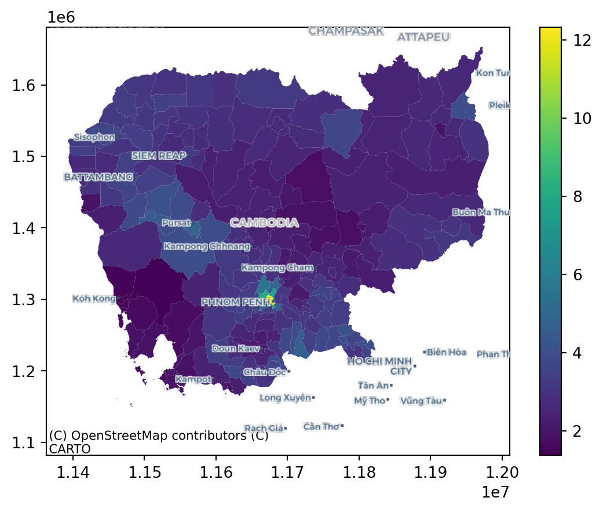
2.3.1 A classiffication problem
db["no2_viz"].unique().shape(198,)sns.displot(
db, x="no2_viz", kde=True, aspect=2
)
plt.show()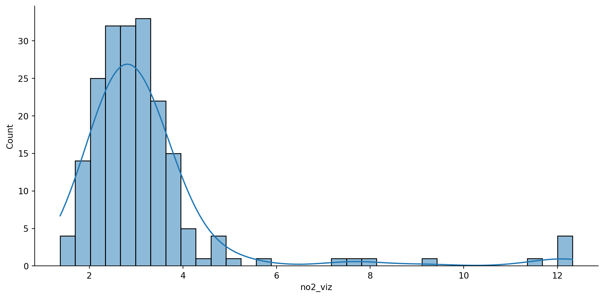
2.3.2 How to assign colors?
Important
To build an intuition behind each classification algorithm more easily, we create a helper method (plot_classi) that generates a visualisation of a given classification.
def plot_classi(classi, col, db):
"""
Illustrate a classiffication
...
Arguments
---------
classi : mapclassify.classifiers
Classification object
col : str
Column name used for `classi`
db : geopandas.GeoDataFrame
Geo-table with data for
the classification
"""
f, ax = plt.subplots(figsize=(12, 6))
ax.set_title(classi.name)
# KDE
sns.kdeplot(
db[col], fill=True, ax=ax
)
for i in range(0, len(classi.bins)-1):
ax.axvline(classi.bins[i], color="red")
# Map
aux = f.add_axes([.6, .45, .32, .4])
db.assign(lbls=classi.yb).plot(
"lbls", cmap="viridis", ax=aux
)
aux.set_axis_off()
plt.show()
return None- Equal intervals
classi = mc.EqualInterval(db["no2_viz"], k=7)
classiEqualInterval
Interval Count
----------------------
[ 1.38, 2.94] | 103
( 2.94, 4.50] | 80
( 4.50, 6.07] | 6
( 6.07, 7.63] | 1
( 7.63, 9.20] | 3
( 9.20, 10.76] | 0
(10.76, 12.32] | 5plot_classi(classi, "no2_viz", db)
- Quantiles
classi = mc.Quantiles(db["no2_viz"], k=7)
classiQuantiles
Interval Count
----------------------
[ 1.38, 2.24] | 29
( 2.24, 2.50] | 28
( 2.50, 2.76] | 28
( 2.76, 3.02] | 28
( 3.02, 3.35] | 28
( 3.35, 3.76] | 28
( 3.76, 12.32] | 29plot_classi(classi, "no2_viz", db)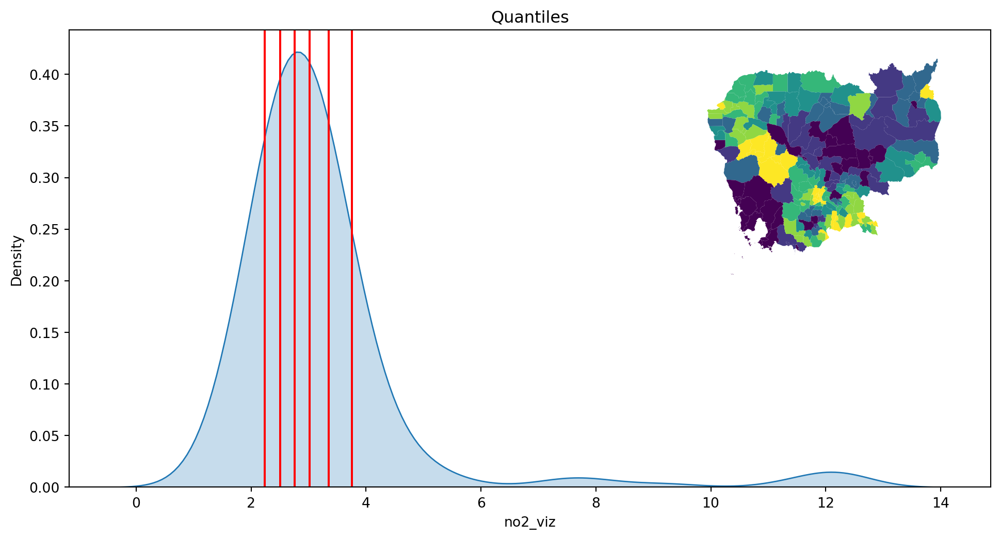
- Fisher-Jenks
classi = mc.FisherJenks(db["no2_viz"], k=7)
classiFisherJenks
Interval Count
----------------------
[ 1.38, 2.06] | 20
( 2.06, 2.69] | 58
( 2.69, 3.30] | 62
( 3.30, 4.19] | 42
( 4.19, 5.64] | 7
( 5.64, 9.19] | 4
( 9.19, 12.32] | 5plot_classi(classi, "no2_viz", db)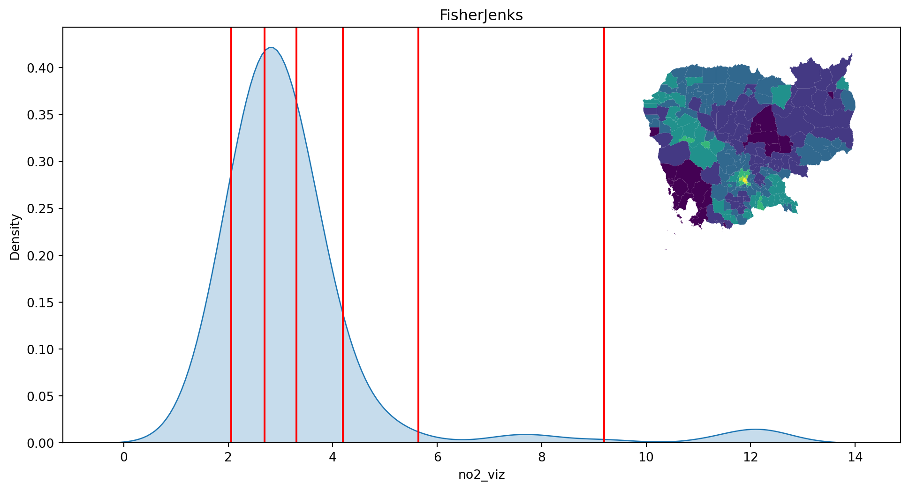
Now let’s dig into the internals of classi:
classiFisherJenks
Interval Count
----------------------
[ 1.38, 2.06] | 20
( 2.06, 2.69] | 58
( 2.69, 3.30] | 62
( 3.30, 4.19] | 42
( 4.19, 5.64] | 7
( 5.64, 9.19] | 4
( 9.19, 12.32] | 5classi.k7classi.binsarray([ 2.05617382, 2.6925931 , 3.30281182, 4.19124954, 5.63804861,
9.19190206, 12.32332434])classi.ybarray([2, 3, 3, 1, 1, 2, 1, 1, 1, 0, 0, 3, 2, 1, 1, 1, 3, 1, 1, 1, 2, 0,
0, 4, 2, 1, 3, 1, 0, 0, 0, 1, 2, 2, 6, 5, 4, 2, 1, 3, 2, 3, 2, 1,
2, 3, 2, 3, 1, 1, 3, 1, 2, 3, 3, 1, 3, 3, 1, 0, 1, 1, 3, 2, 0, 0,
2, 1, 0, 0, 0, 2, 0, 1, 3, 3, 3, 2, 3, 2, 3, 1, 2, 3, 1, 1, 1, 1,
2, 1, 2, 2, 1, 2, 2, 2, 1, 3, 2, 3, 2, 2, 2, 1, 2, 3, 3, 2, 0, 3,
1, 0, 1, 2, 1, 1, 2, 1, 2, 6, 5, 6, 2, 2, 3, 6, 3, 4, 3, 4, 2, 3,
0, 2, 5, 6, 4, 5, 2, 2, 2, 1, 1, 1, 2, 1, 2, 3, 3, 2, 2, 2, 3, 2,
1, 1, 3, 4, 2, 1, 3, 1, 2, 3, 4, 0, 1, 1, 2, 1, 2, 2, 2, 2, 1, 2,
2, 2, 0, 0, 1, 2, 3, 3, 3, 3, 3, 2, 1, 2, 1, 1, 1, 2, 2, 1, 3, 1])2.3.3 How many colors?
The code used to generate the next figure uses more advanced features than planned for this course.
If you want to inspect it, look at the code cell below.
vals = [3, 5, 7, 9, 12, 15]
algos = ["equal_interval", "quantiles", "fisherjenks"]
f, axs = plt.subplots(
len(algos), len(vals), figsize=(3*len(vals), 3*len(algos))
)
for i in range(len(algos)):
for j in range(len(vals)):
db.plot(
"no2_viz", scheme=algos[i], k=vals[j], ax=axs[i, j]
)
axs[i, j].set_axis_off()
if i==0:
axs[i, j].set_title(f"k={vals[j]}")
if j==0:
axs[i, j].text(
-0.1,
0.5,
algos[i],
horizontalalignment='center',
verticalalignment='center',
transform=axs[i, j].transAxes,
rotation=90
)
plt.show()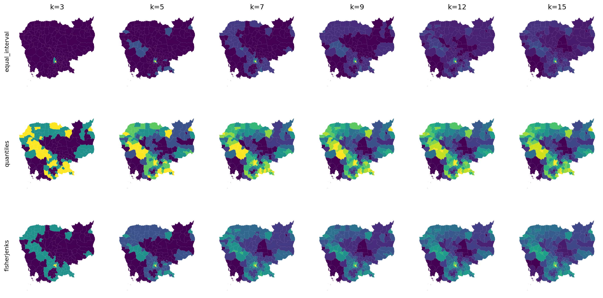
2.3.4 Using the right color
For a “safe” choice, make sure to visit ColorBrewer


2.3.5 Choropleths on Geo-Tables
2.3.5.1 Streamlined
How can we create classifications from data on geo-tables? Two ways:
- Directly within
plot(only for some algorithms)
fig, ax = plt.subplots()
db.plot(
"no2_viz", scheme="quantiles", k=7, legend=True, ax=ax
)
plt.show()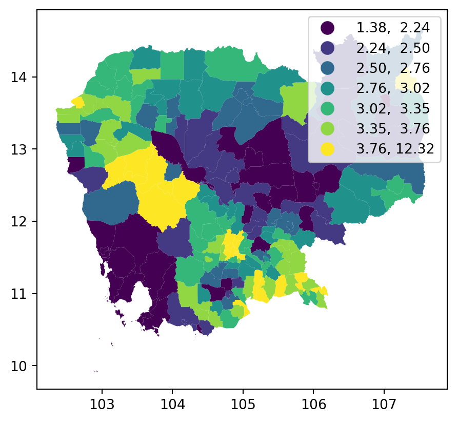
See this tutorial for more details on fine tuning choropleths manually.
Note
Challenge: Create an equal interval map with five bins for no2_viz .
2.3.5.2 Manual approach
This is valid for any algorithm and provides much more flexibility at the cost of effort.
classi = mc.Quantiles(db["no2_viz"], k=7)
fig, ax = plt.subplots()
db.assign(
classes=classi.yb
).plot("classes", ax=ax)
plt.show()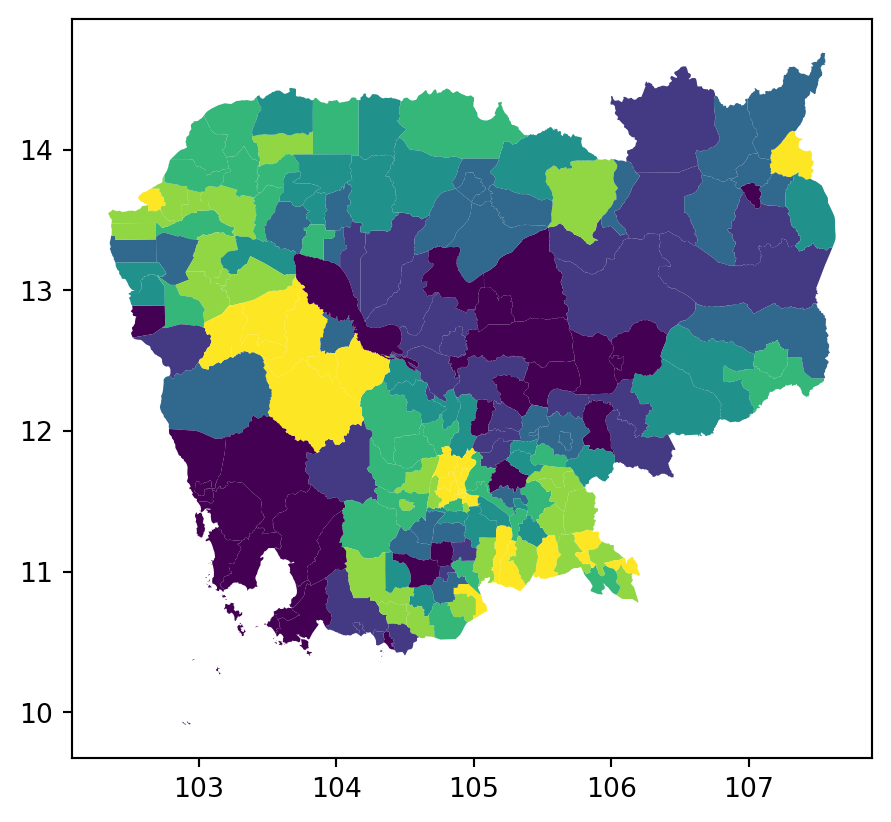
2.3.5.3 Value by alpha mapping
db['area_inv'] = 1 / db.to_crs(epsg=5726).areafig, ax = plt.subplots()
db.plot('area_inv', scheme='quantiles', ax=ax)
ax.set_title('area_inv')
ax.set_axis_off()
plt.show()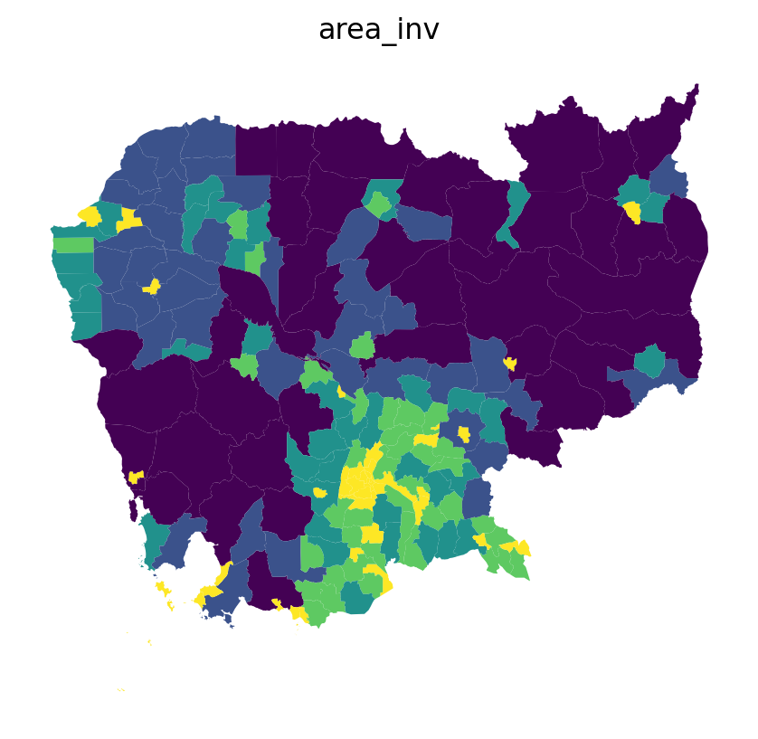
# Set up figure and axis
fig, ax = plt.subplots(1, figsize=(12, 9))
# VBA choropleth
vba_choropleth(
'no2_viz', # Column for color
'area_inv', # Column for transparency (alpha)
db, # Geo-table
rgb_mapclassify={ # Options for color classification
'classifier': 'quantiles', 'k':5
},
alpha_mapclassify={ # Options for alpha classification
'classifier': 'quantiles', 'k':5
},
legend=True, # Add legend
ax=ax # Axis
)
# Add boundary lines
db.plot(color='none', linewidth=0.05, ax=ax)
plt.show()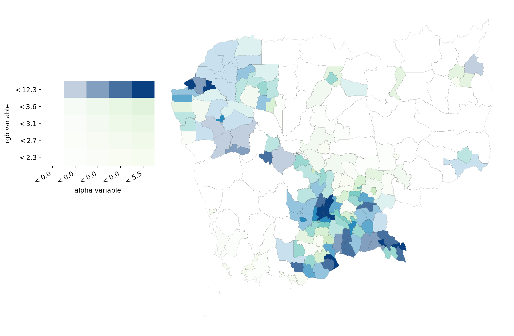
See here for more examples of value-by-alpha (VBA) mapping.
2.3.5.4 Legendgrams
Legendgrams are a way to more closely connect the statistical characteristics of your data to the map display.
Warning
Legendgram are in an experimental development stage, so the code is a bit more involved and less stable. Use at your own risk!
Here is an example:
fig, ax = plt.subplots(figsize=(9, 9))
classi = mc.Quantiles(db["no2_viz"], k=7)
db.assign(
classes=classi.yb
).plot("classes", ax=ax)
legendgram(
fig, # Figure object
ax, # Axis object of the map
db["no2_viz"], # Values for the histogram
classi.bins, # Bin boundaries
pal=palmpl.Viridis_7,# color palette (as palettable object)
legend_size=(.5,.2), # legend size in fractions of the axis
loc = 'lower right', # matplotlib-style legend locations
)
ax.set_axis_off()
plt.show()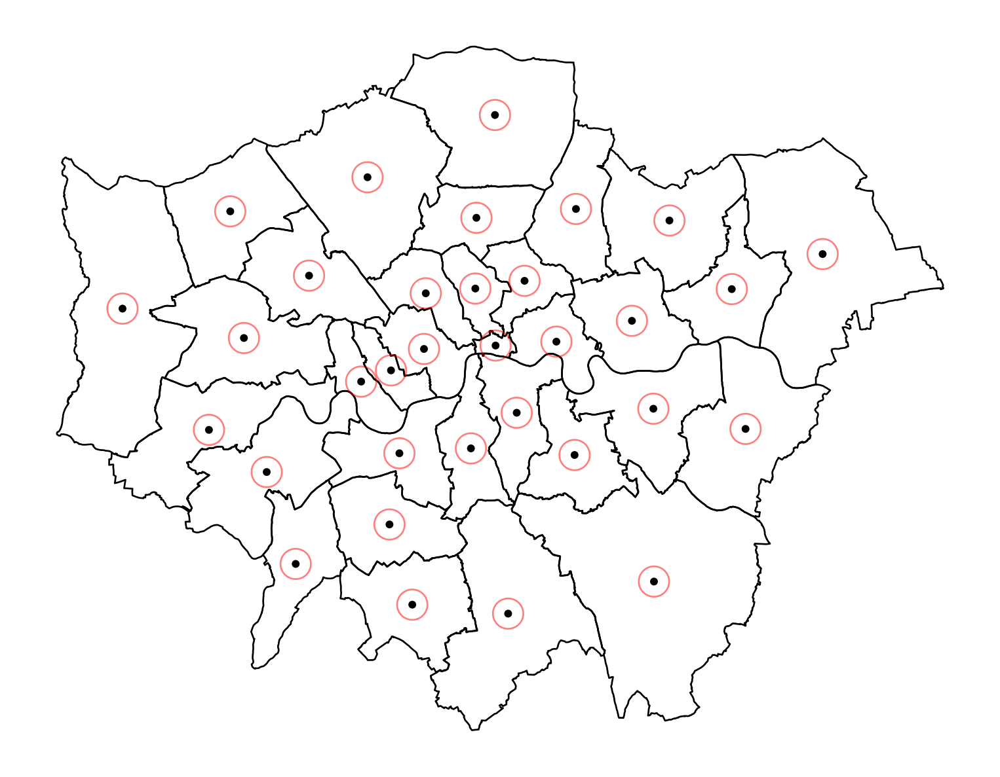
Note
Challenge: Give Task I and II from the GDS course a go.
2.3.6 Choropleths on surfaces
Assuming you have the file locally on the path ./data/:
grid = xarray.open_rasterio(
"./data/cambodia_s5_no2.tif"
).sel(band=1)/var/folders/79/65l52xsj7vq_4_t_l6k5bl2c0000gn/T/ipykernel_30848/3548825724.py:1: DeprecationWarning:
open_rasterio is Deprecated in favor of rioxarray. For information about transitioning, see: https://corteva.github.io/rioxarray/stable/getting_started/getting_started.html
grid = rioxarray.open_rasterio("./data/cambodia_s5_no2.tif").sel(band=1)- Implicit continuous equal interval
fig, ax = plt.subplots()
grid.where(
grid != grid.rio.nodata
).plot(cmap="viridis", ax=ax)
plt.show()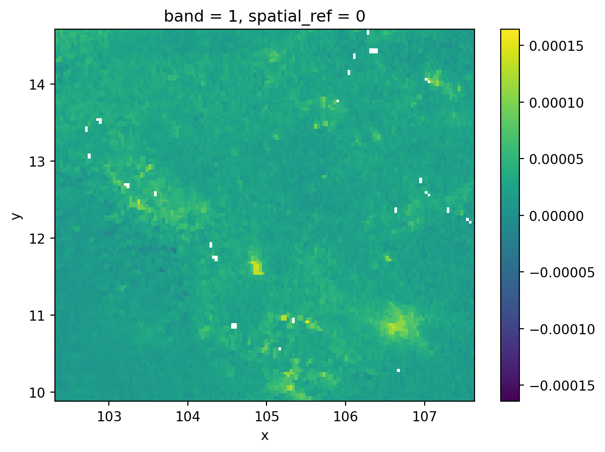
fig, ax = plt.subplots()
grid.where(
grid != grid.rio.nodata
).plot(cmap="viridis", robust=True, ax=ax)
plt.show()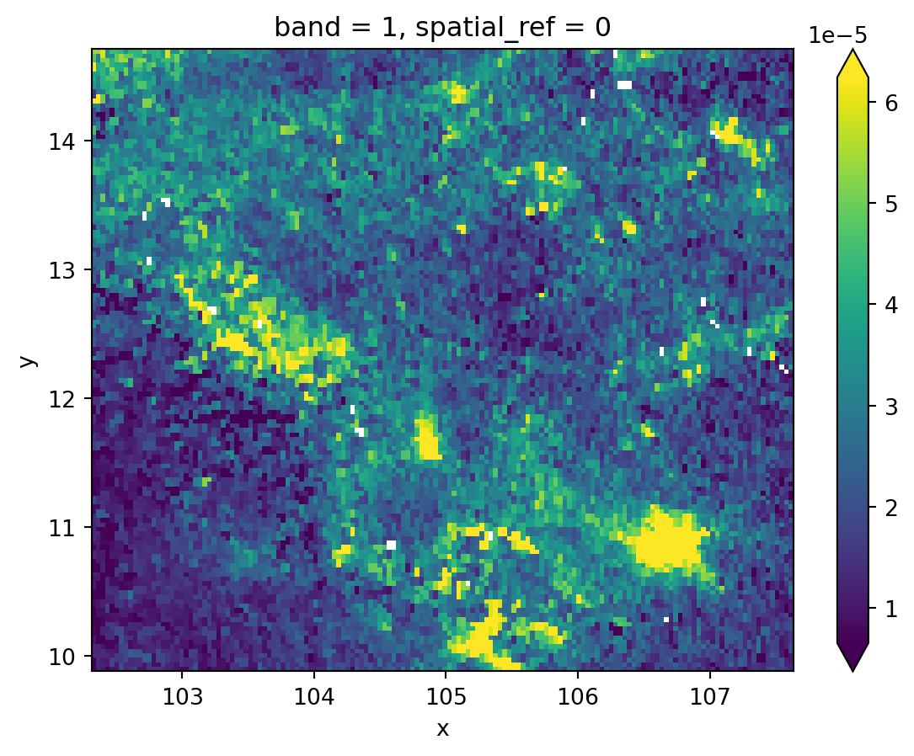
- Discrete equal interval
fig, ax = plt.subplots()
grid.where(
grid != grid.rio.nodata
).plot(cmap="viridis", levels=7, ax=ax)
plt.show()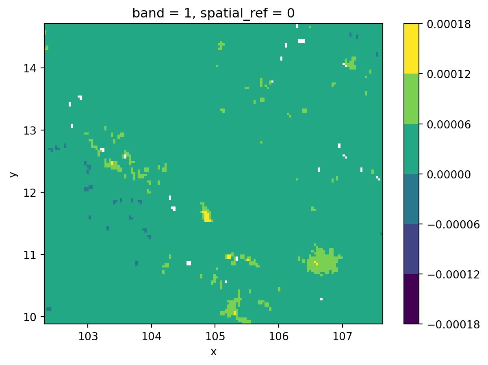
- Combining with
mapclassify
grid_nona = grid.where(
grid != grid.rio.nodata
)
classi = mc.Quantiles(
grid_nona.to_series().dropna(), k=7
)
fig, ax = plt.subplots()
grid_nona.plot(
cmap="viridis", levels=classi.bins, ax=ax
)
plt.title(classi.name)
plt.show()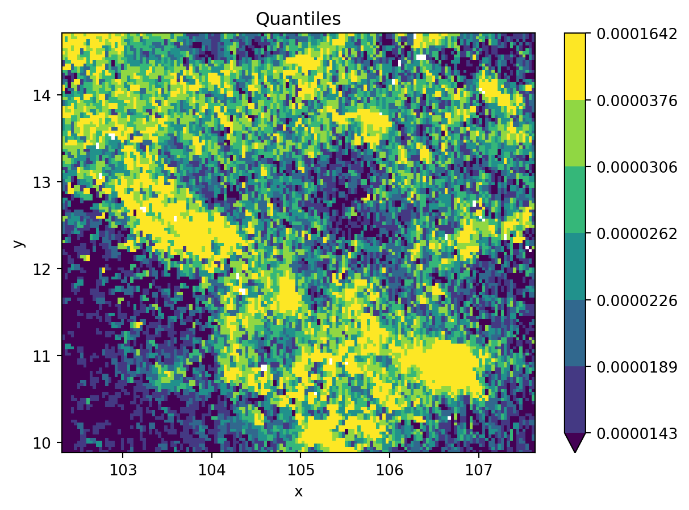
grid_nona = grid.where(
grid != grid.rio.nodata
)
classi = mc.FisherJenksSampled(
grid_nona.to_series().dropna().values, k=7
)
fig, ax = plt.subplots()
grid_nona.plot(
cmap="viridis", levels=classi.bins, ax=ax
)
plt.title(classi.name)
plt.show()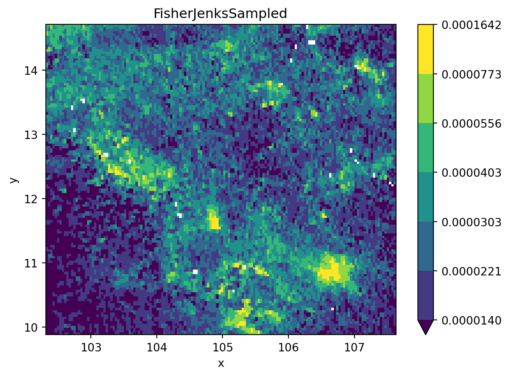
fig, ax = plt.subplots()
grid_nona = grid.where(
grid != grid.rio.nodata
)
classi = mc.StdMean(
grid_nona.to_series().dropna().values
)
grid_nona.plot(
cmap="coolwarm", levels=classi.bins, ax=ax
)
plt.title(classi.name)
plt.show()
grid_nona = grid.where(
grid != grid.rio.nodata
)
classi = mc.BoxPlot(
grid_nona.to_series().dropna().values
)
fig, ax = plt.subplots()
grid_nona.plot(
cmap="coolwarm", levels=classi.bins, ax=ax
)
plt.title(classi.name)
plt.show()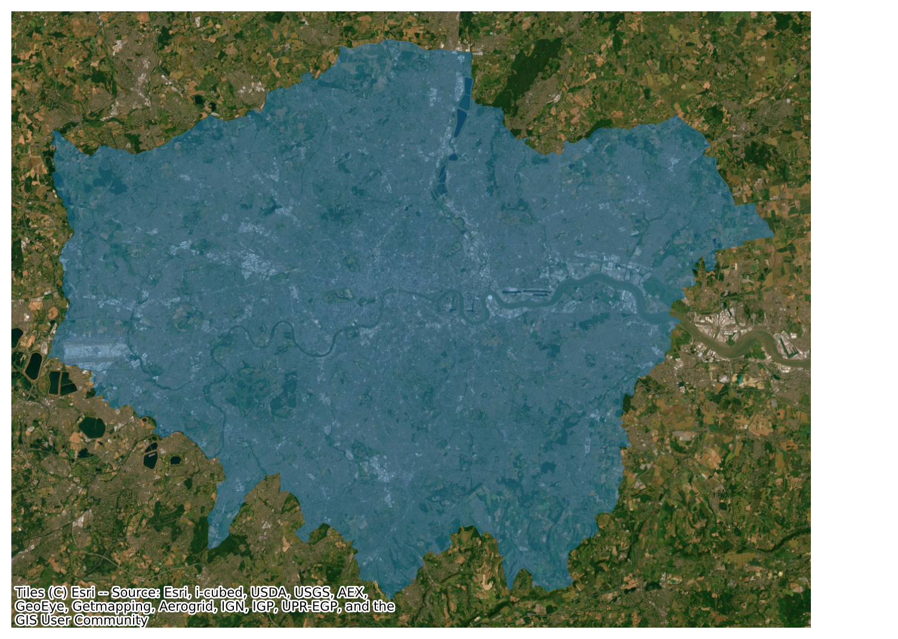
Note
Challenge: Read the satellite image for Madrid used in the Chapter 1 and create three choropleths, one for each band, using the colormapsReds, Greens, Blues.
Play with different classification algorithms.
- Do the results change notably?
- If so, why do you think that is?
2.4 Next steps
If you are interested in statistical maps based on classification, here are two recommendations to check out next:
- On the technical side, the documentation for
mapclassify(including its tutorials) provides more detail and illustrates more classification algorithms than those reviewed in this block. - On a more conceptual note, Cynthia Brewer’s “Designing better maps” (Brewer 2015) is an excellent blueprint for good map making.